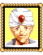

|
남자
이곳은 린도마을이다. 수많은 대단한것들이 있는 마을이지. 꿈의 마을이야! |
|  |
무기상인
린도마을에 오신것을 환영하오! 좋은 무기가 없이는 전투에서 이길수가 없다오! |
|
보켄
안녕! 모험가가 되기로 결정했어! 이곳에서 평생 썩을순 없다고! 내 첫번째 모험을 떠날 준비를 하고있어! |
|
꿈을 가지고 있는 남자
써커스단이 도착하면 천막을 저쪽에다 설치할거야. 그렇게되면 가게에 손님들이 많이 들어오겠지...히히히... |
|
항구에 있는 할아버지
항구엔 보통 배들이 가득하지만...병사들이 다 사갔다. 가져갈수 있는 모든배들을 구입하여 룬파우스트로 돌아갔다. |
|
어린이
내가 이담에 크면 가디아나에 가게를 차릴거야! 괜찮고 평화로운 마을이라고 들었어. 아빠가 돌아가시기전에 그렇게 말씀하셨어. |
|
할머니
써커스가 곧 마을에 온단다. 나도 써커스를 좋아하지. |
|
여자
가디아나에서 왔지? 그럼 마나리나에 있는 안리공주님을 만나뵐거지? |
|
할아버지
가디아나에서 온게지? 뭘 찾고있는게냐? 흠, 신들의유산이라... 그렇다면 마나리나마을에 있는 마법사들에게 물어보는게 어떻느냐? |
|
도구상인
린도에 잘오셨습니다! 수많은 유용한 도구들이 있습니다! 일단 한번 보세요! |
|
남자
큰 가게를 가졌으면 좋겠어. 지붕까지 있는걸로말야...
...너무 욕심이 많을려나? |
|
책장1
많은 책들이 있다:
"물고기와의 재미"
"해물안주" |
|
극장푯말
극장
드라그마사 제작...
|
|
써커스푯말
써커스 천막 설치장
쓰레기 버리지 마시오. |
|
책장2
많은 책들이 있다:
"상업의신"
"포세이돈"
"룬대륙 동화전집" |
|
책장3
많은 책들이 있다:
"101가지 유용한 가르침"
"선박사전" |
|
책장4
많은 책들이 있다:
"사람들과 정치"
"무역과 정치"
"정치와법"
"법과사람들" |
|
연극을 좋아하는 남자
요즘 극장에 꽤 재미있는 연극을 하고있다고 하더군. 가게문을 닫으면 한번 가서 봐야겠어. |
|
책장5
많은 책들이 있다:
"연기 교과서"
"화장"
"룬대륙의 100명의 훌륭한 배우들" |
|
여자
여기 연극들은 다 좋아. 오늘 연극은 진짜 완벽하다고! 제목은 "룬파우스트의 영광"이야! |
|
어린이
가자 룬파우스트! |
|
할아버지
연극은 진짜 재미있다네! 너무나도 박진감있어! 그래! 그래! 아니! 틀니가 빠져나왔다! |
|
배우1(룬나이트로 분장)
하하하! 정말 대단한 역이야! 배우가 되길 잘했어! |
|
배우2(맥스로 분장)
으윽, 이 빌어먹을 역은 곧 그만했으면 좋겠어... |
|
극장 카운터에 있는 남자
어서 들어오십시오! 오늘 메인 이벤트는... 룬파우스트와...빌어먹을 가디아나군의 잔당들과의 전투입니다! 오직 이곳에서만 볼수있는 연극입니다! 한번 보시겠습니까? |
|
(아니오)
안됐군요... 아주 굉장한 연극인데. |
|
(예)
예, 곧 시작하겠습니다. 저쪽에 가서 앉으시지 않겠습니까? |
|
남자
자, 신사숙녀여러분! 연극이 이제 시작되겠습니다! |
|
배우1 (룬나이트역)
훗! 드디어 찼았군, 가디아나의 개여! 룬파우스트에게 맞선다는게 얼마나 어리석은일인지 가르쳐주마! |
|
배우2 (맥스역)
으악! 이렇게 싹싹 빌겠습니다! 목숨만은 살려주세요! |
|
배우1(룬나이트역)
이미 늦었다! 네놈의 징벌자를 만나거라! |
|
배우2(맥스역)
으아아아아아악! |
|
배우2(맥스역)
나를 죽이다니! |
|
해설자
굉장했지요, 여러분? 정말 대단한 연출이었습니다! 룬파우스트의 용감한 영웅이 가디아나놈들을 무찌르는것이 훌륭했습니다! |
|
극장 카운터에 있는 남자
오늘 연극 재미있게 즐기셨으면 합니다! 다음에 또오십시오! |
|
크록박사
천재발명가 크록의 집에 온것을 환영한다! 아, 참고로 그게 바로 나라고. 꽤 시간이 있어보이는구나. 내 새로운 증기갑옷을 구경하는게 어떻겠느냐? 어이, 건츠! 이사람들을 위해 한번 걸어보아라! |
 |
건츠
이번엔 잘 될까요? 움직일수가 있을까요? |
|
크록박사
이런 멍청이같으니라고! 감히 이 크록박사의 천재성을 의심한다는것이냐?! 걷기나 해! |
|
건츠
...알았어요 알겠다고요. |
|
건츠
우...움직일수가 없어요. 또 실패했어요... |
|
크록박사
젠장! 또.. |
|
건츠
휴! 너무 무거워. 너어어어어무 무거워! |
|
크록박사
솔직히 말하자면 아직 이 증기갑옷을 완성시키지 못했다. 내 연구비용이 다 바닥났거든. 게다가 촌장이라는 작자는 더이상 돈을 꿔주지 않는다. 빌어먹을 작자같으니! |
|
책장6
많은 책들이 있다:
"발명가의낙원"
"증기전사를 만드는 방법"
"증기엔진연구" |
|
하녀
진짜! 주인양반은...돈도 만들지 못하는거에 저렇게 매달리신다니까! 맨날 내가 뒤치닥거리를 해줘야한다니까. 자기밥도 못챙겨먹는다니까! |
|
책장7
많은 책들이 있다:
"자신이 말하는 크록발명가에 대한 이야기"
"증기갑옷의기초" |
|
책장8
많은 책들이 있다:
"어설트나이트 계획"
"마법과 엔진" |
|
할머니
마나리나에 가거든 대마법사 오트란트를 찾아보거라. 그가 모르는것은 없다고! 진짜 훌륭한 마법사야. |
|
어머니
써커스가 곧 도착한다. 아이들이 너무 들떠있어서 진정시키지를 못한다고! |
|
촌장
실은말일세...룬파우스트의 케인이... 이곳에 있는 배들을 모조리 구입한후 자국으로 돌아갔다네. 원헀던것이 있는가? 그리고 내가 한번 말한적이 있지만, 룬파우스트가 가디아나를 쳐부쉈다고 해도...그것은 우리와 아무 관계도 없는 일이라네. 울타리는 이제 열렸다네. 어서 마나리나로 가보게나. |
|
촌장의아들
린도마을의 촌장을 찾는다면 바로 이곳에 계시다.
...바로 우리 아버지시지. |
|
촌장의손자
우리 할아버지께서는 아주 중요한 인물이라고. 그리고 나를 무지 끔찍히 아끼셔! 할아버지가 정말 좋아! |